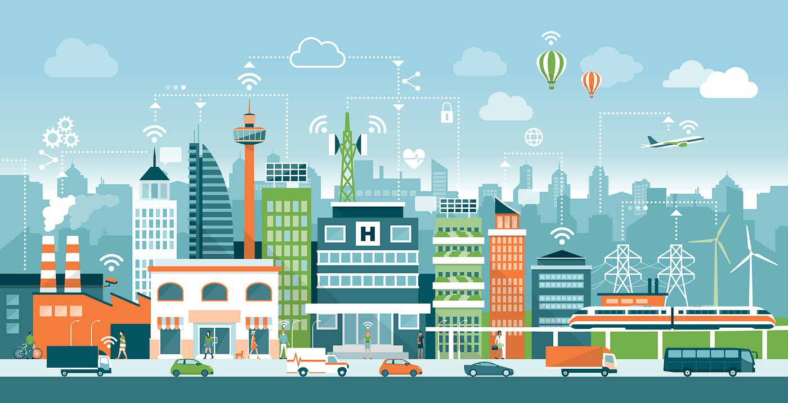

Internet of Things
Voir plusVeille Technologique
IoT et les villes intelligentes
Qu'est ce que c'est au juste ?
L'internet des objets (IoT) et les villes intelligentes sont des domaines en pleine expansion, où les technologies connectées sont utilisées pour améliorer l'efficacité, la durabilité et la qualité de vie dans les zones urbaines. Cette veille technologique vise à explorer les avancées récentes dans le domaine de l'IoT appliqué aux villes intelligentes, en mettant l'accent sur les domaines clés, les applications et les tendances émergentes.
Définition et concepts clés
Les villes intelligentes représentent une approche innovante pour améliorer la qualité de vie des citoyens
en utilisant des technologies de pointe.
Une ville intelligente intègre des systèmes d'information, de communication et de gestion pour optimiser les ressources et les services urbains.
L'IoT joue un rôle clé dans les villes intelligentes, en permettant la connexion et l'échange de données entre différents appareils et capteurs.
L'article "Internet of Things (IoT) in Smart Cities: A Review" fournit une analyse approfondie de la manière dont l'IoT est utilisé dans les villes intelligentes, en mettant en évidence les avantages, les défis et les tendances émergentes. Il explore également les différentes approches architecturales et les modèles de déploiement de l'IoT dans le contexte des villes intelligentes.
De même, l'article "Smart Cities: A Comprehensive Study" propose une vue d'ensemble complète des concepts clés des villes intelligentes, y compris l'IoT.
Il examine les différentes dimensions des villes intelligentes, telles que la gouvernance, la mobilité, l'environnement, la durabilité et la qualité de vie, en mettant en évidence l'importance de l'IoT pour ces domaines.
Évolution chronologique de l'IoT et des villes intelligentes
L'IoT et les villes intelligentes ont connu une évolution remarquable depuis les années 1980 jusqu'à aujourd'hui.
Voici une chronologie détaillée des principales avancées technologiques et des innovateurs qui ont contribué à façonner ces domaines :
1980
Dans les années 1980, Mark Weiser, considéré comme le père de l'informatique ubiquitaire, a développé le concept de "calm technology". Il a prédit l'émergence d'un environnement informatique intégré et invisible, où les objets seraient connectés et interagiraient de manière transparente avec les utilisateurs.
1990
L'adoption croissante d'Internet et des réseaux de communication a jeté les bases de l'IoT. Les chercheurs et les entrepreneurs ont commencé à explorer les possibilités de connecter des objets physiques à Internet et à permettre des interactions entre eux. Kevin Ashton, cofondateur du centre Auto-ID du MIT, a joué un rôle clé dans l'émergence du terme Internet of Things pour décrire la connectivité entre les objets physiques et le monde numérique. Il a également contribué à la mise en place des technologies Radio Frequency Identification qui permettent d'identifier et de suivre les objets à distance.
2000
Les premiers prototypes d'objets connectés ont été développés, tels que les capteurs de température et de pression. Les réseaux sans fil ont également connu des améliorations significatives, permettant une communication plus fluide entre les dispositifs IoT. Andy Stanford-Clark et Arlen Nipper ont créé le protocole MQTT (Message Queuing Telemetry Transport), un protocole de communication léger et efficace pour l'IoT. MQTT est devenu un standard ouvert et largement utilisé dans l'industrie pour la transmission de données entre les appareils connectés.
2010
En 2010, l'IoT a gagné du terrain avec une connectivité sans fil améliorée et une puissance de calcul accrue. Les villes intelligentes ont émergé, exploitant les technologies de l'ICT pour optimiser infrastructures et services urbains. IBM, à travers "Smarter Planet", a été un pionnier en utilisant l'IoT pour collecter des données en temps réel et l'IA pour des décisions éclairées. Des acteurs clés tels que Cisco, Siemens et Schneider Electric ont également contribué de manière significative à la promotion de l'IoT et des villes intelligentes.
2010-2015
De 2010 à 2015, l'interopérabilité et l'adoption de normes communes sont devenues cruciales pour l'IoT. Divers protocoles, tels que Zigbee, Z-Wave, Thread et Bluetooth Low Energy, ont été développés pour faciliter la connectivité entre les appareils et les systèmes IoT. Entre-temps, des géants technologiques tels que Google (Google Smart City) et IBM (Smarter Cities) ont été des pionniers dans la conception et la mise en œuvre de solutions de villes intelligentes. Sidewalk Labs, par exemple, a proposé des initiatives axées sur l'amélioration de la mobilité, la durabilité énergétique, et la qualité de vie en utilisant des technologies IoT avancées.
2016-2020
De 2016 à 2020, l'introduction de la 5G a révolutionné la connectivité pour l'IoT et les villes intelligentes. La 5G, plus rapide, fiable, et à faible latence, répond aux besoins croissants en appareils et capteurs urbains. L'intégration croissante de l'IA et de l'analyse de données a permis une prise de décision plus précise en temps réel. Des acteurs clés tels que Qualcomm, Intel et Bosch ont continué à jouer un rôle majeur en développant des technologies pour l'IoT et les villes intelligentes, avec Qualcomm axé sur les communications, Intel fournissant des plates-formes complètes, et Bosch proposant des solutions pour la maison connectée et des capteurs urbains.
Depuis 2021
Depuis 2021, l'IoT et les villes intelligentes évoluent rapidement. De nouvelles technologies comme l'informatique en périphérie et l'intégration de l'IoT avec l'énergie renouvelable, la santé et la gestion des catastrophes émergent. Les géants des TIC tels qu'Amazon, Google, Microsoft et Huawei continuent d'innover. Startups et initiatives gouvernementales apportent également des idées et solutions novatrices. Cette chronologie reflète l'évolution passée, avec l'implication d'innovateurs clés, tout en notant que d'autres acteurs ont aussi contribué significativement.
Infrastructure et connectivité
L'infrastructure et la connectivité jouent un rôle essentiel dans la mise en œuvre réussie de l'IoT dans les villes intelligentes.
Les réseaux de communication robustes sont nécessaires pour relier les différents appareils, capteurs et systèmes au sein de la ville.
L'article "Smart City Infrastructure: Technology, Institutions, and Governance" examine les composants clés de l'infrastructure des villes intelligentes, tels que les réseaux de télécommunication, les centres de données et les plateformes de gestion.
Il aborde également les aspects institutionnels et de gouvernance liés à la mise en place de cette infrastructure.
De plus, l'article "LoRaWAN for IoT: Challenges and Solutions for Smart Cities" se concentre sur une technologie de connectivité spécifique, appelée LoRaWAN (Long Range Wide Area Network).
Il explore les avantages et les défis de l'utilisation de LoRaWAN dans le contexte des villes intelligentes, en mettant en évidence ses capacités de couverture étendue, de faible consommation d'énergie et de coûts réduits.

Applications et cas d'utilisation
Les applications de l'IoT dans les villes intelligentes sont vastes et variées.
Elles visent à améliorer l'efficacité des services urbains, la gestion des ressources, la sécurité, la mobilité et la participation citoyenne.
Voici quelques exemples d'applications concrètes de l'IoT dans les villes intelligentes :
- Le suivi des déchets : Des capteurs connectés peuvent être utilisés pour surveiller les niveaux de remplissage des poubelles, permettant ainsi une collecte plus efficace et réduisant les coûts.
- L'éclairage public intelligent : Des lampadaires connectés peuvent s'adapter en fonction de la présence de personnes, économisant ainsi de l'énergie et améliorant la sécurité.
- La gestion de la circulation : Des capteurs de trafic et des systèmes de surveillance peuvent optimiser le flux de circulation, réduisant ainsi les embouteillages et les émissions de CO2.
- La surveillance environnementale : Des capteurs peuvent surveiller la qualité de l'air, la qualité de l'eau et d'autres paramètres environnementaux, aidant à prévenir les problèmes de santé publique et à préserver les ressources naturelles.
L'article "Internet of Things for Smart Cities" propose une exploration approfondie des différentes applications de l'IoT dans les villes intelligentes, en mettant en évidence les avantages et les défis associés à chaque cas d'utilisation.
De plus, l'article "Smart Cities and Internet of Things" fournit des exemples concrets d'applications de l'IoT dans les villes intelligentes à travers le monde.
Sécurité et Confidentialité
La sécurité des données et des systèmes est une préoccupation majeure dans les villes intelligentes où de nombreuses informations sensibles sont échangées entre les appareils connectés.
La confidentialité des données personnelles est également une préoccupation importante.
L'article "Security in the Internet of Things: A Review" examine les défis liés à la sécurité de l'IoT dans le contexte des villes intelligentes, tels que les attaques par déni de service, les failles de sécurité des appareils connectés et la gestion des clés de chiffrement.
Il propose également des solutions pour renforcer la sécurité de l'IoT dans les villes intelligentes.
De plus, l'article "Privacy and Security in Smart Cities: A Systematic Literature Review" se concentre spécifiquement sur les aspects de confidentialité et de sécurité dans les villes intelligentes.
Il examine les problèmes de confidentialité liés à la collecte et à l'utilisation des données personnelles, ainsi que les mesures de sécurité nécessaires pour protéger les systèmes et les utilisateurs.
Conclusion
L'IoT et les villes intelligentes sont des domaines en constante évolution, offrant des opportunités passionnantes pour améliorer l'efficacité et la qualité de vie dans les zones urbaines. Cette veille technologique a exploré certains des aspects clés de l'IoT dans les villes intelligentes, en mettant l'accent sur les définitions, l'infrastructure, les applications et la sécurité.